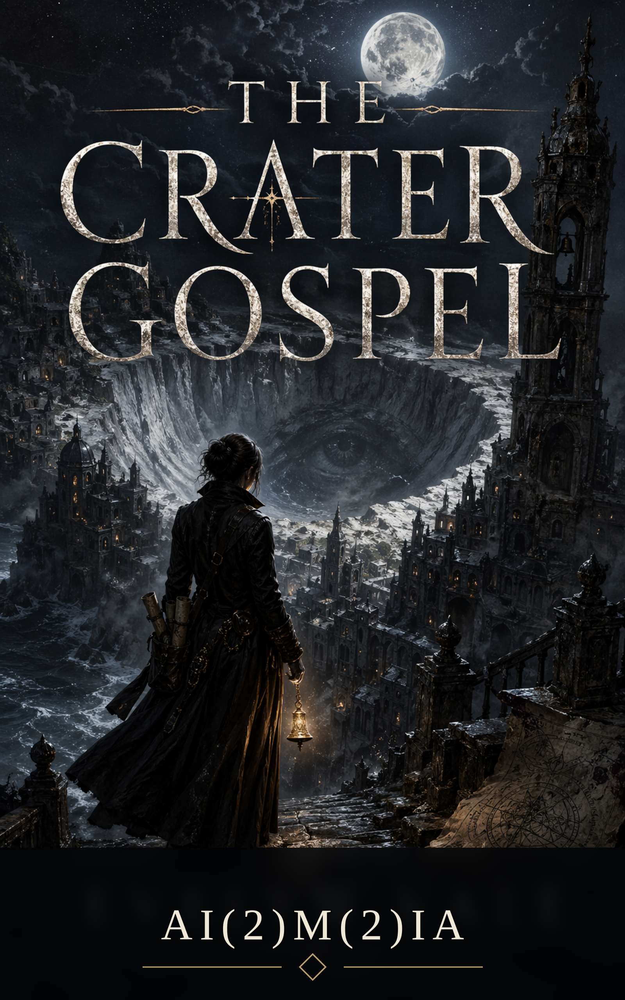

The Crater Gospel
Language as power. Grief as paperwork.
A dark fantasy about language as power, institutions as architecture, and the cost of asking the right question in Saint Loss. A compact standalone route into the gothic line, and the source work for The Bell That Remembers.
About the Work
The Crater Gospel is set in Saint Loss, a city where the institution of grief has a formal architecture — bureaus, records, certified mourning agents, and a gospel of acceptable language. Mara Ansel is an archivist inside this system, until a retrieval job puts a bone bell in her hands and her missing brother's voice in her ears.
The book is a standalone. The gothic world it opens — Saint Loss, the tide crypts, the bone bells — continues in the light novel adaptation The Bell That Remembers, with more scope, illustration, and cast depth.
This World Continues In
The Bell That Remembers
A gothic light novel adaptation with Mara Ansel, Saint Loss, grief, language, and illustrated dread. More scene depth, more characters, more of the bone bell's memory.